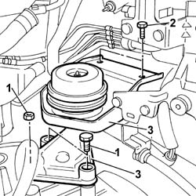
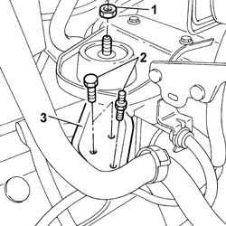

1008A42 POWER UNIT RIGID SUPPORT - GEARBOX SIDE - R.R.
- Path
- Procedures > 10 ENGINE > 1008 POWER UNIT SUPPORTS > 1008A POWER UNIT FASTENINGS > 1008A42 POWER UNIT RIGID SUPPORT - GEARBOX SIDE - R.R.
- Kind
- repair procedure (removal / refitting; the operation number is the code)
- Applies to
- engines: 2.0 16v, 2.0 16V JTD, 2.2 16V JTD; all production periods
- Interactive page
- https://sloeber94.github.io/elrnDB-fUlss/en/#/179006851
Applies to: engines: 2.0 16V JTD, 2.2 16V JTD; all production periods
 Removing
Removing
 Refitting
RefittingPosition the vehicle on a lift.
Op. 5010B18 CLIMATE CONTROL UNIT AIR INTAKE - R.R.
Op. 1048A10 AIR FILTER ASSEMBLY - R.R.
Raise the vehicle.
Op. 7055B54 UNDER ENGINE PROTECTION/GUARD - R.R.
Op. 4450B02 LEFT FRONT WHEEL - R.R
Position a hydraulic support under the gearbox and differential unit bellhousing.
1. Undo the bolts and the nut fixing the rigid support to the gearbox.
2. Undo the bolts fixing the bracket to the bodyshell.
3. Remove the gearbox side rigid power unit support complete with flexible mounting.
Separate the flexible mounting from the rigid support at the bench.

Applies to: engines: 2.0 16V JTD, 2.2 16V JTD; all production periods
Refitting
RemovingFit the mounting on the bracket and on the rigid support at the bench.
Fit the gearbox side rigid engine support complete with mounting and bracket.
Tighten the bolts and the nut fixing the support to the gearbox to torque.
da Nm | Fastening | Component | dia |
|---|---|---|---|
4.5 | Bolt | RIGID POWER UNIT MOUNTING, TIMING SIDE | - |
da Nm | Fastening | Component | dia |
|---|---|---|---|
4.5 | Nut | RIGID POWER UNIT MOUNTING, TIMING SIDE | - |
Tighten the bolts fixing the support bracket to the bodyshell to torque.
da Nm | Fastening | Component | dia |
|---|---|---|---|
2.5 | Bolt | POWER UNIT BRACKET, GEARBOX SIDE | - |
Tighten the nuts securing the flexible block to the bracket to torque.
Tighten the centre nut fixing the flexible block to the rigid support to torque.
da Nm | Fastening | Component | dia |
|---|---|---|---|
3.0 | Bolt | FLEXIBLE BLOCK TO THE BRACKET | - |
da Nm | Fastening | Component | dia |
|---|---|---|---|
6.0 | Nut | FLEXIBLE BLOCK TO THE RIGID MOUNT | - |
Remove the hydraulic support positioned previously under the bellhousing.
Op. 4450B02 LEFT FRONT WHEEL - R.R
Op. 7055B54 UNDER ENGINE PROTECTION/GUARD - R.R.
Lower the vehicle.
Op. 1048A10 AIR FILTER ASSEMBLY - R.R.
Op. 5010B18 CLIMATE CONTROL UNIT AIR INTAKE - R.R.
Remove the vehicle from the lift.
Applies to: engines: 2.0 16v; all production periods
Removing
RefittingOp. 5010B18 HEATING VENTILATION UNIT AIR INTAKE - R+R
See descriptions
Op. 7055B54 UNDER ENGINE PROTECTION/GUARD - R.R.
- Position a hydraulic support under the gearbox and differential unit bellhousing.
1. Undo the nut securing the flexible block to the rigid gearbox mounting
2. Undo the bolts and the nut fixing the rigid support to the gearbox.
3. Remove the gearbox side rigid power unit support complete with flexible mounting.

Applies to: engines: 2.0 16v; all production periods
Refitting
Removing- Fit the gearbox side rigid engine support.
- Tighten the bolts and the nut securing the mounting to the gearbox to torque.
 | Value - daNm | Fastening | Component | Ø |
|---|---|---|---|---|
. | 4.5 | Bolt | POWER UNIT GEAR BOX END RIGID MOUNT |
| Value - daNm | Fastening | Component | Ø |
|---|---|---|---|---|
. | 4.5 | Nut | POWER UNIT GEAR BOX END RIGID MOUNT |
- Tighten the nut securing the flexible mount to the rigid mount to torque.
| Value - daNm | Fastening | Component | Ø |
|---|---|---|---|---|
. | 3 | Nut | GEARBOX SIDE RUBBER MOUNT |
- Remove the hydraulic support positioned previously under the bellhousing.
Op. 7055B54 UNDER ENGINE PROTECTION/GUARD - R.R.
See descriptions